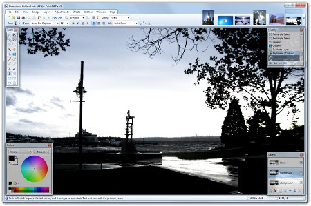
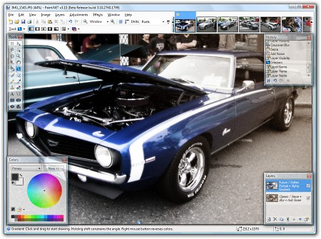
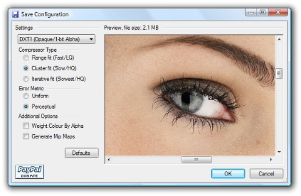
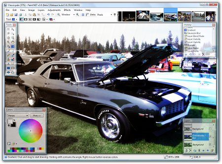
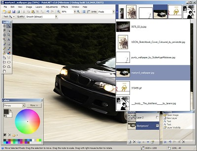

Screenshots
New for version 3.5 is a
revamped UI theme for Windows 7 and Vista users, inspired by
Aero and
making use of "glass". Other features include reduced
memory usage, better stability, and better performance. See the
Roadmap page for more details.

The following image was
created with a combination of a transparency gradient,
Sepia adjustment, Add Noise effect, and the new Soften
Portrait effect in v3.10. The original picture was taken
at the Classic Car Show in downtown Kirkland on July 22,
2007.
|
 |
New for v3.10 is support
for the DirectDraw Surface (DDS) file type, which is
popular in game development and game modding. It is also
used by the XNA Development Kit for the XBOX 360.

Version 3.0 added
support for drawing gradients, both in color and in a
special transparency mode. The latter is often used for
fading between two images, or between two versions of
the same image. The active image in the screenshot below
has a foreground layer that had the Sepia adjustment
applied to it, after which a transparency gradient was
used to fade between it and the background layer which
was an oversaturated version of the original photograph.
This picture was taken at the 5th Annual Labor Day
Weekend Classic Car Show at
Silverwood Theme Park near Coeur D'Alene, ID.
A 1920x1200 version of this image suitable for desktop
wallpaper use is available
here.
A low-resolution (800x600) copy of the original photograph is
available for comparison here
(Copyright (C) 2006 Rick Brewster).

The new Paint.NET v3.0 release has support for
MDI (multi-document interface). This is accomplished by
providing a tab strip in the upper right corner of the main
window. All open images are placed there, and navigation is very
simple, intuitive, and fast. Other new features include a better
toolbar interface and a customizable color palette.

Paint.NET can be used to enhance and clean up your
photographs. Using the Clone Stamp tool, the power lines that
criss-crossed in front of the Space Needle were carefully
removed. Other operations were performed that had the effect of
smoothing out the image without blurring it, adding some "bloom"
(glow), and increasing the contrast.
This 1920x1200 image is available
here
at deviantArt, and a
low-resolution copy of the original photograph is available for
comparison
here (Copyright (C) 2005
Marie Sheneman).
Paint.NET v2.6 introduces the Curves adjustment, available
from the Layers → Adjustment → Curves menu item, which is
capable of some powerful and sophisticated editing. This
screenshot was edited in Paint.NET in order to add the inset
copy of the original image, a border shadow, and overlaid text
with shadow.

Paint.NET v2.5 added full freedom to scale, rotate, move,
and combine both selections and images. This screenshot includes
two images from akinna's stock
photography page on deviantArt: "cat1" (link)
and "polaroid1" (link).
Used with permission.
Work with TGA images, which are popular in the game
development community and is also the format used for
World of Warcraft
screenshots.
Use the various features together to create stunning and
original effects:
|


{kind=link}
{kind=link}
{kind=link}
{kind=link}
{kind=link}
{kind=link}
{kind=link}
{kind=link}
{kind=link}
{kind=link}